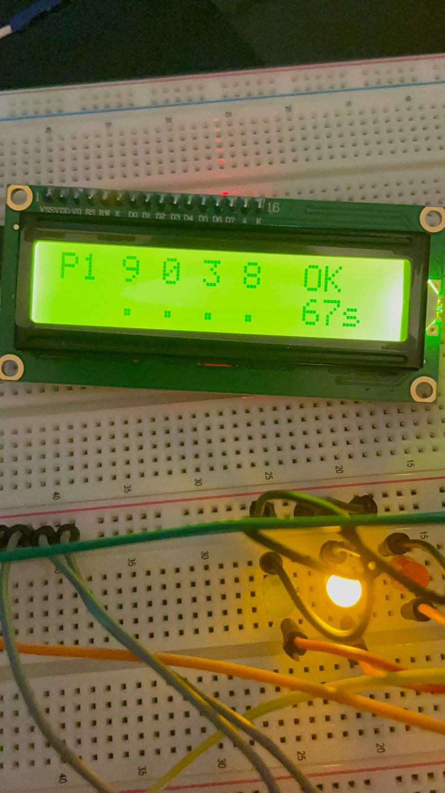
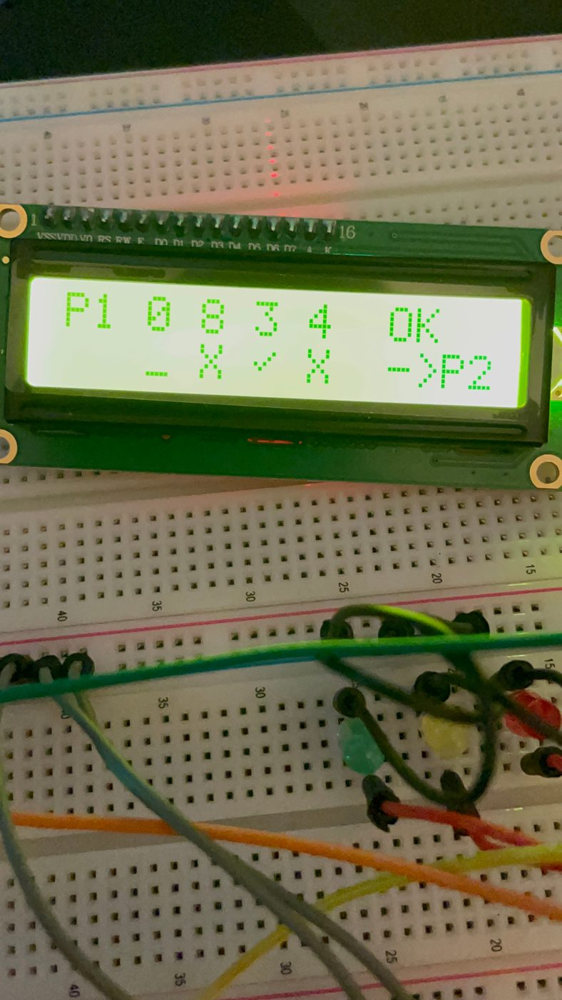
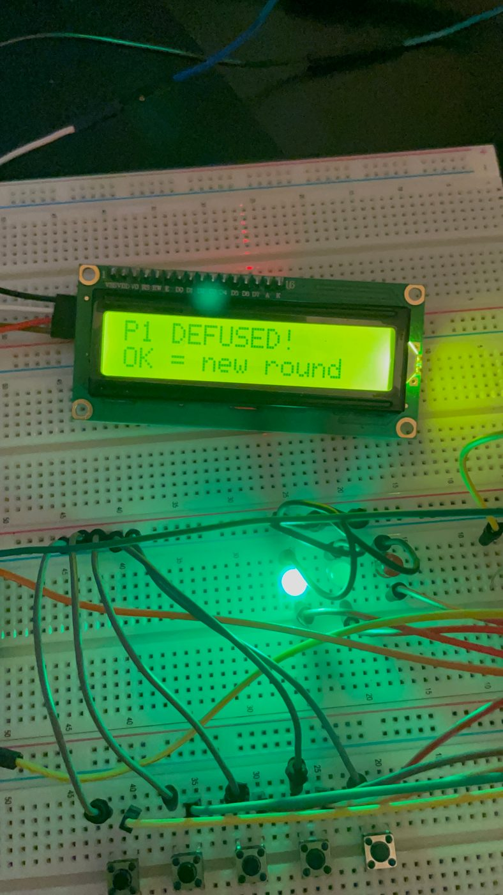
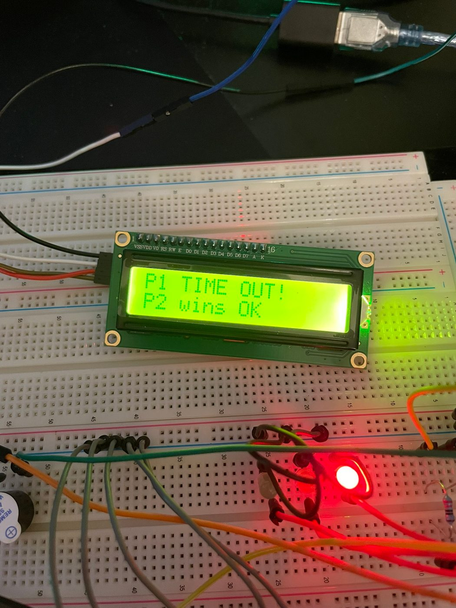

Fig. 01 — the completed two-player build; the LCD reads “Bomb Duel! OK to start.”
Overview
A two-player, Arduino-based bomb-defusal game in which players compete to identify randomly generated four-digit codes before their individual countdown timers expire. It transforms a digital number-guessing trend into an interactive physical system with real buttons, timed gameplay, visual feedback, and sound.
The finished prototype uses an Arduino Uno, a 16×2 I²C LCD, five input buttons, three status LEDs, and a buzzer. I wrote the embedded C++ program, designed the circuit schematic in KiCad, assembled the electronics on a breadboard, and tested the game through repeated play.
The final system included two-player turn management, individual countdown timers, duplicate-digit handling, position-aware feedback, progressively faster warning sounds, and dedicated win and timeout states.
Highlights
Complete, fully functional two-player embedded game built in about two weeks.
Finite-state-machine design with non-blocking millis() timing driving buttons, timers, LEDs, sound, and LCD at once.
Position-aware guess evaluation with correct duplicate-digit handling, plus a KiCad-designed circuit.
At a glance
The prototype.
2players, turn-based
5finite-state-machine states
120 scountdown per player
~2 wksconcept to working prototype
Motivation
From a screen trend to a physical game.
The project began after I saw a trend involving players attempting to identify hidden number combinations. I wanted to explore how the same concept could become a standalone physical game rather than a verbal or screen-based activity — a compact embedded system that:
Generates random four-digit codes.
Lets two players compete.
Accepts physical button input.
Provides position-aware feedback.
Manages separate countdown timers.
Creates urgency through lights and sound.
Operates without a computer after programming.
Gameplay
How a round plays out.
The game waits for the confirmation button to begin.
The Arduino generates a random four-digit code for each player.
Both players receive an independent 120-second countdown timer.
Player 1 uses four buttons to set the four digits of a guess.
The confirmation button submits the guess.
The game evaluates the guess and displays position-aware feedback.
If the guess is incorrect, the result stays visible before control passes to the other player.
Each player's timer counts down only during that player's active turn.
The warning LED and buzzer speed up as the active player's time decreases.
The first player to identify the complete code wins.
If a player's timer reaches zero, that player loses and the other wins.
The confirmation button begins a new round after the game ends.

Fig. 02 — Player 1's turn: the four-digit guess, confirm prompt, feedback dots, and remaining timer.
Software Architecture
A finite state machine.
The game is written in Arduino C++ and organized around a finite-state-machine architecture, with five explicit operating states:
WAIT_START — waits for the players to begin a new round.
P1_TURN — accepts and processes Player 1's guesses.
P2_TURN — accepts and processes Player 2's guesses.
SHOW_RESULT — displays feedback before switching players.
ROUND_OVER — shows the winner or timeout result and waits for a new round.
Explicit states kept input handling, timing, display output, and turn transitions cleanly separated — important because managing the hand-off between players was the hardest software-design problem in the project.
Guess-Evaluation Logic
Position-aware, duplicate-safe feedback.
For each submitted digit, the game returns one of three results: correct digit in the correct position, correct digit in the wrong position, or digit not present in the hidden code.
The logic handles repeated digits by tracking which positions in both the generated code and the submitted guess have already been matched. Correct-position matches are resolved first; the remaining unmatched digits are then checked for wrong-position matches — so one digit in the hidden code is never counted more than once.

Fig. 03 — position-aware feedback: ✓ correct position, ✗ wrong, then hand-off to Player 2.
Timing, Input & Feedback
Everything running at once.
Non-blocking timing on Arduino's millis() polls buttons, ticks timers, drives LEDs and sound, and refreshes the LCD without freezing on long delays.
Each player has an independent 120-second timer that counts down only on their turn and pauses while feedback is shown.
Every button is software-debounced — tracking raw changes, stable state, and time since the last change — so one physical press registers once.
A progressive warning system speeds up the yellow LED and buzzer as time runs low, with a red LED and continuous tone on timeout and a green LED on a successful defuse.
The 16×2 I²C LCD shows the current player, guess, feedback, remaining time, and round state, with a custom character for a correct-position checkmark.

Fig. 04 — win state: the green LED and “P1 DEFUSED!”

Fig. 05 — timeout: the red LED and “P1 TIME OUT!”
Circuit Design
Schematic to breadboard.
I designed the electrical schematic in KiCad — documenting the Arduino Uno, I²C LCD, five input buttons, three status LEDs, buzzer, power and ground, and supporting components — then assembled the physical circuit on a breadboard. Fitting the complete system onto the available breadboard while keeping the wiring understandable was one of the project's largest physical challenges.
Hardware
What's on the board.
Arduino Uno
16×2 I²C LCD
Four digit-selection buttons + one confirmation button
Green, yellow, and red status LEDs
Piezo buzzer
Breadboard, jumper wires, and supporting resistors
Technical Challenges
The hard parts.
Player transitions — switching immediately after a guess made feedback hard to read; a dedicated SHOW_RESULT state pauses, shows the result, and waits for confirmation before handing off.
Breadboard layout — packing the Arduino, LCD, five buttons, three LEDs, buzzer, and wiring onto one breadboard stayed functional but dense, which shaped the plans for a future version.
Coordinating concurrent behaviour — monitoring buttons, timers, LEDs, sound, LCD, and game state at once, solved with non-blocking timing and explicit states.
My Contributions
What I did.
Developed the original physical-game concept and two-player rules.
Selected the Arduino Uno and supporting hardware.
Designed the complete circuit schematic in KiCad.
Assembled the physical circuit on a breadboard.
Wrote the complete embedded C++ program.
Implemented random four-digit code generation.
Developed the position-aware guess-evaluation algorithm with duplicate-digit handling.
Implemented a five-state finite state machine and two-player turn management.
Created separate countdown timers using non-blocking millis() timing.
Added button-debouncing logic.
Built the LCD interface and state rendering, including a custom checkmark character.
Developed progressive buzzer and LED feedback, plus win, timeout, and new-round behaviour.
Tested through repeated gameplay and diagnosed software and wiring problems.
Documented the project with source code, a KiCad schematic, photos, and video.
ChatGPT was used as a programming support tool while I independently directed, wrote, integrated, and tested the program.
Key Engineering Lessons
What I'd carry forward.
This project taught me the value of structuring embedded software around clear operating states. The player-transition problem made the logic hard to manage until a dedicated result state cleanly separated evaluating a guess from passing control to the next player.
I also gained practical experience with button debouncing, non-blocking timing, LCD interface limits, electronic feedback systems, and physical circuit organization — and saw that a circuit can be functionally correct yet still hard to package and maintain. A future version should consider portability, wiring organization, and enclosure design from the beginning.
Future Improvements
Toward a finished product.
A compact enclosure with soldered components in place of temporary jumper wires.
A more durable internal layout and better portability.
Clearer physical organization of buttons and indicators.
Easier battery / portable power support.
Potentially a custom PCB.
Exterior design that reinforces the bomb-defusal theme.